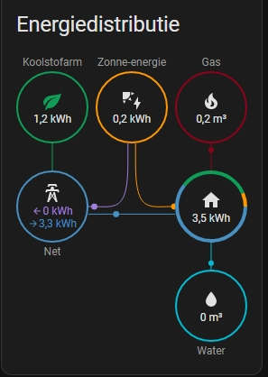

Troubleshooting
Common issues and solutions. Also check the GitHub README.
Updating via ESPHome
- Open the ESPHome add-on in Home Assistant.
- Find your S0tool, click the three dots.
- Select Validate, then Install.
USB Drivers
| Chip | Description | Driver |
|---|---|---|
| CP2102 | Common on Wemos D1 mini | Silicon Labs |
| CH341 | Older NodeMCU boards | GitHub |
| CH340 | Common clone boards | sparks.gogo.co.nz |
Energy Dashboard
From HA 2022.11, add your data to the Energy Dashboard (S0tool v22.10.20+).
Water consumption
- Search for
watermeter Totaaland add it under Water consumption.
Water flow New in v3.6.9
- Since S0tool v3.6.9 you can also add the water flow sensor to the dashboard.
- Search for
watermeter flowand add it under Water flow (Waterdoorstroom). - If Home Assistant shows a unit warning (unit changed warning), choose "Change historical values from 'l/min' to 'L/min' without conversion" and click Repair.
Tip: The flow sensor shows your current water usage in
L/min in real-time on the Nu (Now) tab of the Energy Dashboard — very useful for detecting leaks or high usage.
S0 port (kWh / solar)
- Search for
Totaal opgebrachtand add it under the relevant energy category.



Changing Total Readings
 Water Counter — D2
Water Counter — D2- S0 Port / kWh — D5
- Calibration service call
Compatible Water Meters
| Brand | Model | Type | Status | Region | Notes |
|---|---|---|---|---|---|
| Elster | V200 | 💧 Water | Compatible | NL | |
| Itron | Aquadis+ | 💧 Water | Compatible | NL | |
| Sensus | 620 | 💧 Water | Compatible | NL | |
| Maddalena | CD SD Plus | 💧 Water | Compatible | BE | |
| Actaris | Single-Jet | 💧 Water | Compatible | NL | |
| Zenner | MNK-RP-N | 💧 Water | Compatible | DE | |
| Kamstrup | Multical 21 | 💧 Water | Compatible | EU | |
| Diehl | Hydrus | 💧 Water | Compatible | EU |
Know a compatible meter? Add it via Community →

Advanced & Problems
S0tool is adoptable in the ESPHome dashboard.
Submit a Pull Request or open an Issue. More info (Dutch) at huizebruin.nl.